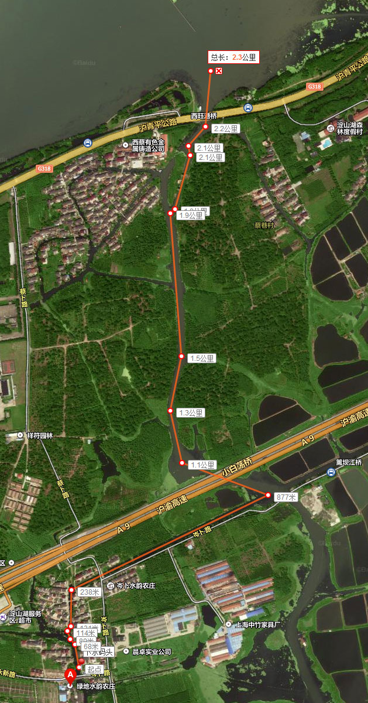
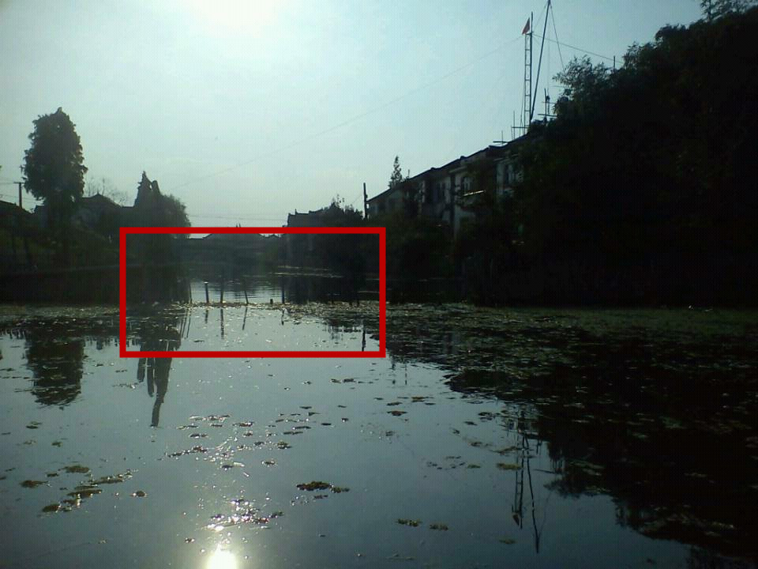
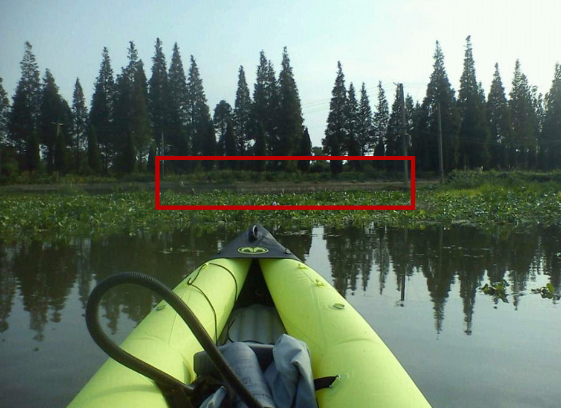
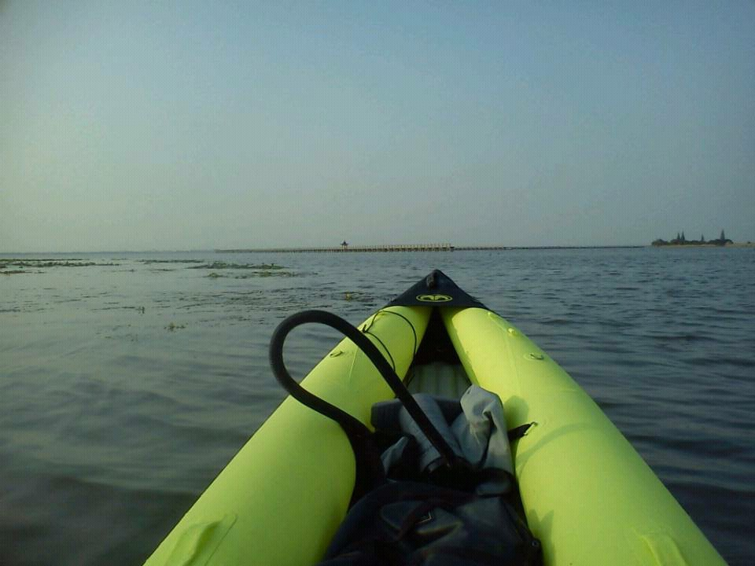
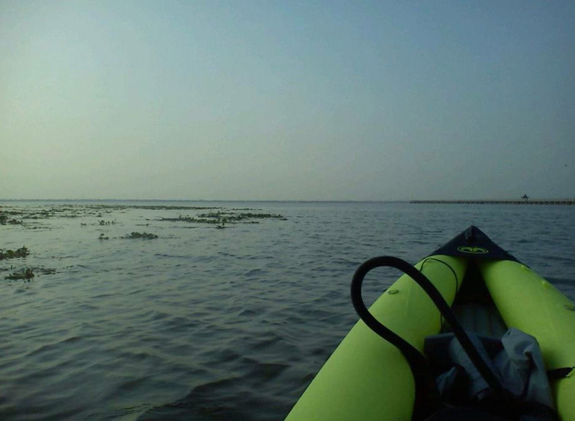
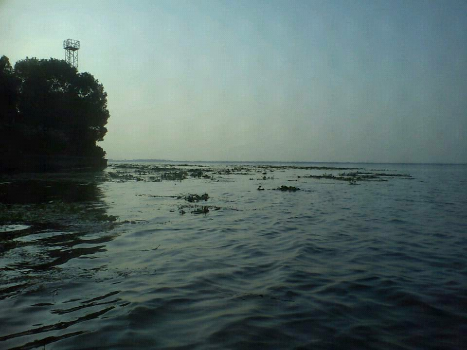
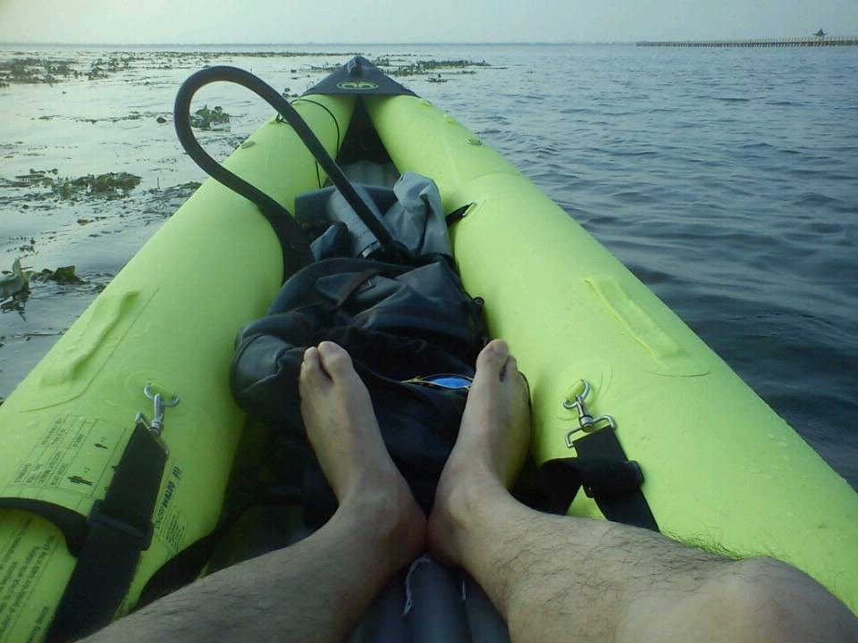
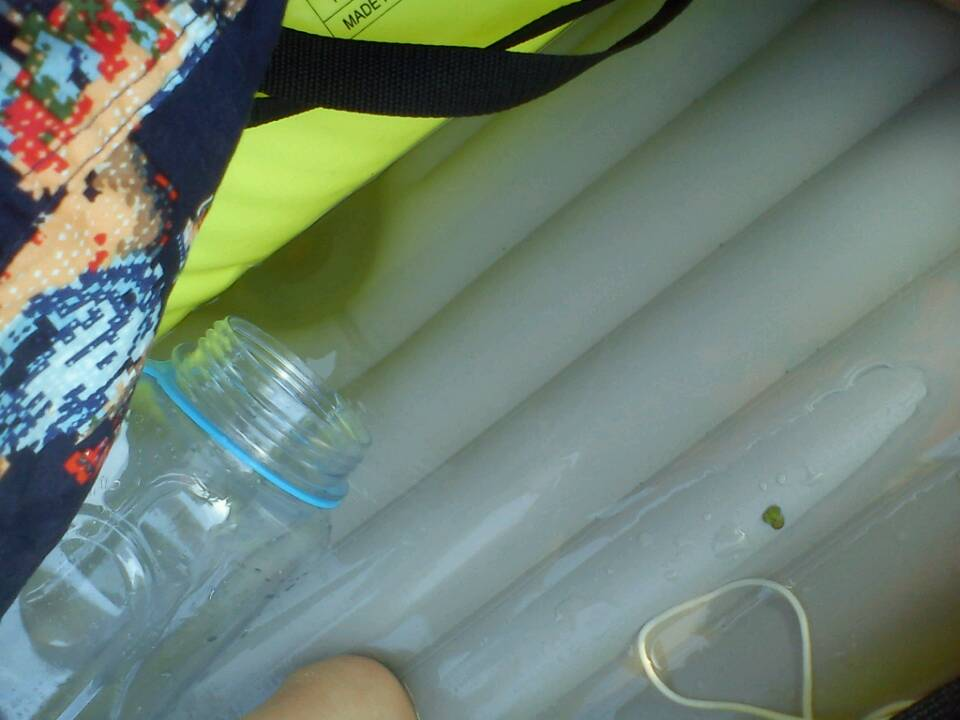

发信人: kennethchen (颤抖的灵魂), 信区: outdoor
标 题: 长假最后一天淀山湖皮划艇
发信站: 饮水思源 (2014年10月08日22:45:59 星期三)
买了皮划艇一年多了，经常在淀山湖周边烧烤时顺带着在附近的河道里玩，但从来没有划进过湖里，上一次看好攻略，找到一处下水点最后划到一个河道口碰到水中有竹竿阻拦就没敢过去，最终放弃。
这次做好充分的研究，确定上次的路线是可行的，于是再次前往。
先说一下下水点和路线：位于淀山湖附近的岑卜，百度地图搜“绿地水韵农庄”就是了，具体位置和进湖路线见下图。PS: 这个农庄的所谓农家乐就别去吃了，去过的说很难吃，食物自备吧。
 screen.width - 200){this.width = screen.width - 200}">
这个路线中有两处阻碍，都在路线图中238米至877米那一段中，第一处是河道中插了一排竹竿，船头对准比较疏松的两根中间划过去顶开就可以慢慢挤过去了，我因为是充气皮艇，第一次去的时候有点顾忌会刮破所以在这里就放弃了。第二处也是有一排竹竿，有了第一处的经验，再过竹竿已经不是问题，但这里更大的难度是竹竿外有一大片水葫芦挡着，想必竹竿的作用就是为了挡住这片水葫芦防止漂进支流，我在这里也是把心一横硬闯过去了，而且出了点小意外都没注意，后面再具体说。
第一处障碍：
 screen.width - 200){this.width = screen.width - 200}">
第二处障碍，拍照时已经闯过来了，从红色框里的一排竹竿中间挤过来的：
 screen.width - 200){this.width = screen.width - 200}">
过来上面两处后就是宽阔的河道了，一路向北就能顺利进去淀山湖了，到了湖里时间已经挺晚了，没有停留太久了就返回，下次再来好好玩玩。
不方便带了好设备，用一台渣手机随便拍了些照分享：
 screen.width - 200){this.width = screen.width - 200}">
 screen.width - 200){this.width = screen.width - 200}">
 screen.width - 200){this.width = screen.width - 200}">
 screen.width - 200){this.width = screen.width - 200}">
返程时突然感觉座位下面湿了，其实之前也有感觉，以为只是船桨带进来的水，但是越来越多，发现的时候已经几乎是坐在水里了，这时大惊，但并不相信是艇破了，因为过水葫芦的后就一直注意在听有没有漏气声，于是仔细检查了一下，是座位下面的水阀没盖紧，想想应该是之前过水葫芦的时候被小木棍给顶开了一直没留意。正好带了个水壶，慢慢把水舀出去。。。。
 screen.width - 200){this.width = screen.width - 200}">
发在这里希望有同样兴趣的同学们也可以分享下其它适合玩皮划艇的水域和路线。
--
※ 来源:·饮水思源 bbs.sjtu.edu.cn·[FROM: 180.154.176.96]
※ 修改:·kennethchen 于 2014年10月08日22:49:51 修改本文·[FROM: 180.154.176.96]
|